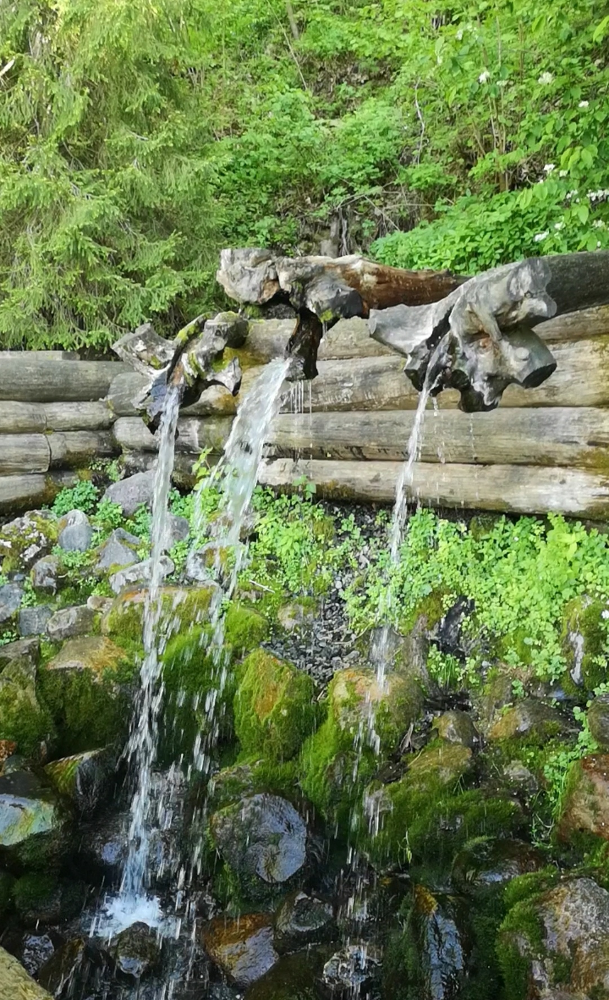
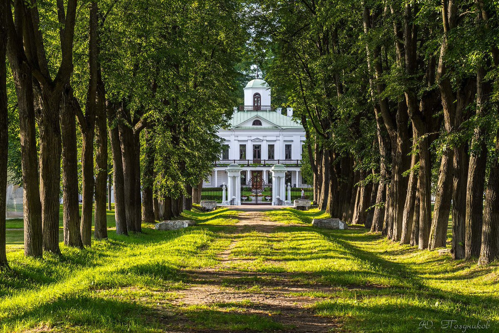

Сканди-мероприятия
-

Гремячий ключ - Подворье Троице-Сергиевой Лавры
27 июля 2024г 8:00
В Подмосковье существует немало замечательных мест с богатейшей историей и красивейшей первозданной природой. И одно из них расположено недалеко от Сергиева Посада. С давних пор место это в народе называлось Гремячий ключ.
По преданию появился он молитвами преподобного Сергия Радонежского и по сей день дарует исцеление духовное и телесное всем, приходящим сюда с верой, надеждой и благоговением. Гремячий является самым большим и известным водопадом в Московской области. Сейчас это место благоустроено, но еще 10 лет назад подойти к нему было невероятно сложно.
Приглашаем вас совершить сканди-поход от Сергиева Посада до Гремячего ключа.
Приезжаем в Сергиев Посад на электричке. Завтракаем. Затем разминка и небольшая прогулка по городу до Лавры. По пути немного поговорим об истории обители и зайдем на гору, с которой открывается вид на монастырь. Потом посетим Лавру и отправимся пешком до Гремячего ключа. Дорога займет около трех часов, т.к. нам надо будет пройти около 16 км. По пути сделаем привал с перекусом. Когда доберемся до комплекса Гремячий ключ, пообедаем в Трапезной и затем пройдем по территории с экскурсией.
На территории оборудовано несколько купелей, где желающие смогут окунуться после экскурсии.
Обратно в Сергиев Посад поедем на рейсовом автобусе в 17 ч. После возвращения, по традиции, всем желающим предлагаю отдохнуть и поужинать в кафе города. В Москву можно возвращаться на комфортабельном автобусе или на электричке.
Все организационные подробности после регистрации.
Инструктор: Краснова Елена
Экскурсию по комплексу Гремячий ключ проведет экскурсовод комплекса.
Включено всё экскурсионно-спортивное сопровождение.
Самостоятельно оплачивается транспорт и питание (завтрак, обед, ужин)
Стоимость: 2500р
ЗаписатьсяПодробнее -

Жемчужное ожерелье Москвы. Вглубь веков по Дмитровской дороге.
Дата уточняется
Друзья, приглашаем вас на целый день отправиться в сканди-путешествие по Дмитровской дороге. Погружать нас в мир истории и флоры будет наш гид Антон Гладилин.
В этот день мы посетим:
- Усадьбу Виноградово с изящной Владимирской церковью (1772-1777 гг.)
- Великолепную усадьбу Марфино, где прогуляемся по парку, посмотрим на Рыцарский мост и знаменитых грифонов. Посетим два храма – Рождества Богородицы в духе европейского ренессанса (1707 год) и Петра и Павла (1777 год). А также увидим впечатляющий, но частично разрушенный каретный двор. Готические постройки усадьбы особенно красивы на фоне пышной июльской зелени!
- Усадьбу Никольское-Прозоровское, чьи главный дом и флигели еще сохраняют следы роскошной необарочной отделки. А рядом находится восстановленный храмовый комплекс.
- Усадьбу Никольское-Обольяниново с огромным усадебным парком, главным домом и восстановленным храмом. Здесь есть и хорошо сохранившиеся липовые аллеи регулярного парка и большие поляны, каскад прудов. А также участки пейзажного парка, старинные дубы, ельник. От границ парка открываются захватывающие виды на окрестности.
Сейчас восстановлением этой усадьбы занимается целеустремленная и отважная команда волонтеров. Мы увидим результаты их деятельности, а также мы проведем небольшой мастер-класс по инвазивной флоре.
- Усадьбу Ольгово с живописными руинами, парком, прудами и гротом!
- Храм Покрова Богородицы в Андреевском (архитектор Франческо Компорези, 1803—1821 год).
- Величественный Троицкий собор в Яхроме в стиле неоклассицизм (1892—1895 год) с отдельно стоящей колокольней (1908 года).
Помимо того, что мы обогатимся новыми знаниями в области истории и ботаники, мы, позанимаемся скандинавской ходьбой, сделаем различные упражнения и надышимся чистым воздухом.
Отъезд на микроавтобусе от метро Алтуфьево в 9:00
Возвращение к метро Алтуфьево к 21:00
В цену включено:
- вся спортивно-экскурсионная программа,
- автобус на весь день
- обед.
Инструктор: Краснова Елена
Гид: Гладилин Антон
Стоимость: 7900р
ЗаписатьсяПодробнее -

Scandi-поход «Киногород Пилигрим Порто - усадьба Середниково»
17 августа 2024г 9.00
Маршрут проходит по лесным и полевым тропинкам, асфальт есть только на последних пяти километрах. В пути встретятся заросли малины, арки из рябины, стелющейся травы и ярко-зелёных болот — в лесу очень живописно..
В походе увидим много интересного, например: полуразрушенный мост, усадьбу Середниково и киногород. В усадьбе проникнемся поэтическим духом — здесь в XIX веке вдохновлялся М.Ю. Лермонтов. Киногород «Пилигрим Порто» — это европейский город середины XVIII века: с пряничными домиками, ратушной площадью, ярмаркой, церковью, тюрьмой, кладбищем, огромным кораблём. В 2010 году здесь снимали фильм «Записки экспедитора тайной канцелярии». Оставим на эти места силы и время — они будут под конец маршрута.
Протяженность маршрута 17 км. Маршрут носит походный характер, поэтому главный дом в усадьбе Середниково мы сможем осмотреть только снаружи, обязательно прогуляемся по красивому парку, по возможности перекусим в кафе усадьбы. Но перекус также обязательно надо взять с собой. Ведь маршрут у нас неблизкий.
Мы не будем лишать себя возможности проникнуться историей усадьбы и при желании прослушаем аудиоверсию небольшой экскурсии. В киногороде постараемся устроить фотосессию.
Конечно мы будем путешествовать со скандинавскими палками, маршрут как раз к этому располагает. В пути нас ждет разминка, немного упражнений и растяжка. И еще отличная компания.
Продолжительность маршрута ориентировочно 8 часов. Но временем лучше располагать и на вечер ничего не планировать.
Как добраться?
На общественном транспорте:
Едем на электричке с Ленинградского вокзала в 8.07. В 8.55 Прибываем на станцию Фирсановская. Оттуда и начнется наш пешеходный маршрут. Окончание маршрута там же.
На автомобиле:
Подъезжаем к станции Фирсановская к 9.00. Встреча с основной группой рядом с платформой со стороны улицы Железнодорожная.
Рекомендации по экипировке будут в групповом чате.
Инструктор Волосюк Маргарита
В стоимость входит: работа инструктора по скандинавской ходьбе, групповая аптечка.
В стоимость НЕ входит: трансфер до места, отдельно оплачиваются входные билеты в усадьбу Середниково (100р) и киногород Пилигрим-Порто (200р), чаепитие в кафе.
Стоимость: 1500р
ЗаписатьсяПодробнее -

Scandi-поход по Зелёному кольцу Москвы
24 августа 2024г
Зелёное кольцо Москвы - это пешеходный маршрут протяжённостью 160 километров, который проходит по паркам и зелёным зонам с минимальными переходами по городским улицам и опоясывает таким образом Москву.
На пути встречается множество достопримечательностей — есть возможность увидеть не просто зеленые парки, но и самые красивые виды города, исторические места и много интересных и неизвестных памятников столицы.
Маршрут подходит как для семейных прогулок, так и для тренировок спортсменов в беге, маунтинбайке, скандинавской ходьбе. Зимой — для занятий лыжами.
Автор маршрута Александр Советов.
Увидим парки:
- Большой ботанический сад
- Тимирязевский парк
- Участок протяженностью около 16 км
✅Нас ждёт :
• Сканди-разминка
• Дыхательная гимнастика
• Поход с наслаждением и любовью
• Дружеские кофе/чайные паузы
• Растяжка в конце маршрута
Длительность около 7 часов
Участок можно пройти не полностью. Будет возможность свернуть с маршрута в районе м.Владыкино и Петровско-Разумовская
📍Одежда и обувь спортивная по погоде.
📍Скандинавские палки берем с собой и улыбку тоже.
📍Термосы с чаем и перекусы приветствуются.
Вся организационная информация будет в телеграмм-чате
Инструктор Волосюк Маргарита
Стоимость: 1100р
ЗаписатьсяПодробнее